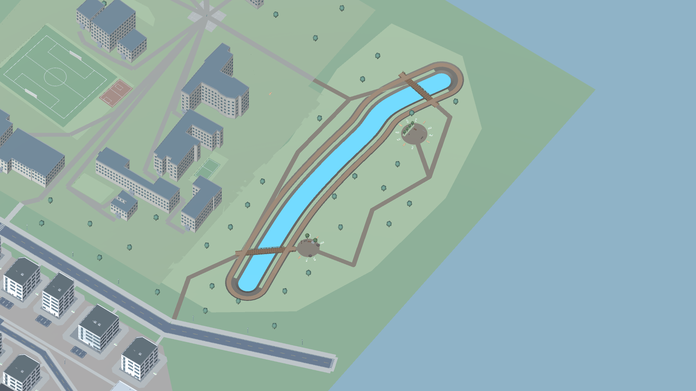
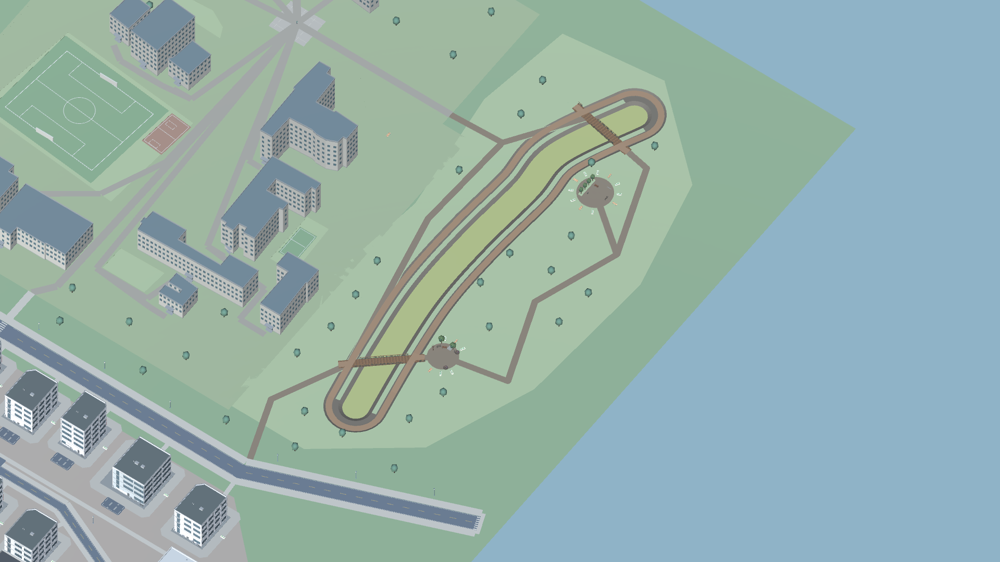

Unity Play Mode의 실제 게임 카메라 캡처. 각 이미지를 누르면 1920×1080 원본을 엽니다. 도시·구역은 동일 구도이며 NPC 추적은 카메라 개선 전후를 비교합니다. 조명·후처리와 성능 최적화(C/D)는 이번 범위에 포함하지 않습니다.
동일한 아파트 주변 NPC 위치에서 촬영한 비교안입니다. 최종 선택과 검증 결과는 QA 기록을 확인하세요.

